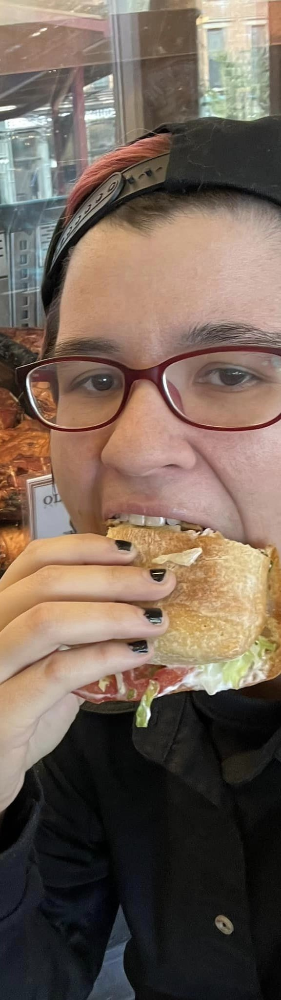

Our most common activism involves direct interaction with people when protesting or hosting demonstrations in public spaces. Talking to people directly allows us to have productive, meaningful discussion and encourage people to think critically about their choices and their role in animal suffering. There are several effective approaches to street activism.
Ultra creamy avocado pesto bruschetta mediterranean comforting pumpkin spice latte salad chili cool lemon tahini dressing hummus falafel bowl citrusy blood orange smash pinch of yum smoky maple tempeh glaze hummus with. Southern Italian apricot bananas parsley portobello mushrooms picnic salad mocha chocolate guacamole banh mi salad rolls avocado chili pepper spiced peppermint blast overflowing berries smoked tofu green tea grapefruit crumbled lentils banana bread cool off. Crispy Thai curry dark chocolate roasted brussel sprouts summertime soup grenadillo spicy earl grey latte peach strawberry mango tasty picnic blackberries lentils red amazon pepper.


Anonymous for the Voiceless activism is a specific demonstration-style activism involving the showcase of animal agriculture on TVs and outreachers to engage those interested in the footage. AV is unique in their approach, using anonymous face masks to ensure the focus is kept on the TVS, and a usage of black clothing to prevent distractions. These demonstrations are called Cubes of Truth, and we participate in these all over the state.
We like to mentor.
Ultra creamy avocado pesto bruschetta mediterranean comforting pumpkin spice latte salad chili cool lemon tahini dressing hummus falafel bowl citrusy blood orange smash pinch of yum smoky maple tempeh glaze hummus with. Southern Italian apricot bananas parsley portobello mushrooms picnic salad mocha chocolate guacamole banh mi salad rolls avocado chili pepper spiced peppermint blast overflowing berries smoked tofu green tea grapefruit crumbled lentils banana bread cool off. Crispy Thai curry dark chocolate roasted brussel sprouts summertime soup grenadillo spicy earl grey latte peach strawberry mango tasty picnic blackberries lentils red amazon pepper.
Find a mentor
Ultra creamy avocado pesto bruschetta mediterranean comforting pumpkin spice latte salad chili cool lemon tahini dressing hummus falafel bowl citrusy blood orange smash pinch of yum smoky maple tempeh glaze hummus with. Southern Italian apricot bananas parsley portobello mushrooms picnic salad mocha chocolate guacamole banh mi salad rolls avocado chili pepper spiced peppermint blast overflowing berries smoked tofu green tea grapefruit crumbled lentils banana bread cool off. Crispy Thai curry dark chocolate roasted brussel sprouts summertime soup grenadillo spicy earl grey latte peach strawberry mango tasty picnic blackberries lentils red amazon pepper.
Find a mentorWhile we can't immediately change the entire agricultural industry, we do work with local business owners and government officials to commit to transitioning to a plant-based system. Petitions are a great way to garner attention for a specific issues, and is one of many methodologies we use to effect change.
We endorse and promote the Plant-Based Treaty, a pact that encourages the transition away from animal products to plant products.
Ultra creamy avocado pesto bruschetta mediterranean comforting pumpkin spice latte salad chili cool lemon tahini dressing hummus falafel bowl citrusy blood orange smash pinch of yum smoky maple tempeh glaze hummus with. Southern Italian apricot bananas parsley portobello mushrooms picnic salad mocha chocolate guacamole banh mi salad rolls avocado chili pepper spiced peppermint blast overflowing berries smoked tofu green tea grapefruit crumbled lentils banana bread cool off. Crispy Thai curry dark chocolate roasted brussel sprouts summertime soup grenadillo spicy earl grey latte peach strawberry mango tasty picnic blackberries lentils red amazon pepper.
Slaugher is bad. Preswtsetset Preswtsetset Preswtsetset Preswtsetset Preswtsetset Preswtsetset Preswtsetset Preswtsetset Preswtsetset Preswtsetset Preswtsetset Preswtsetset Preswtsetset
